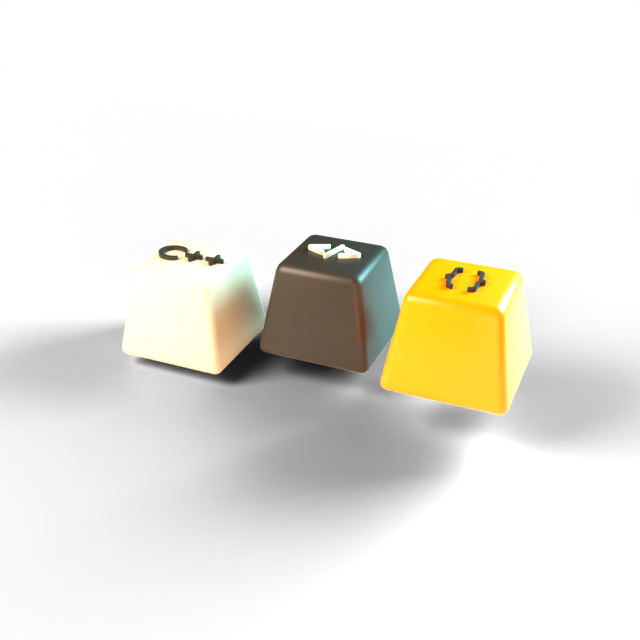
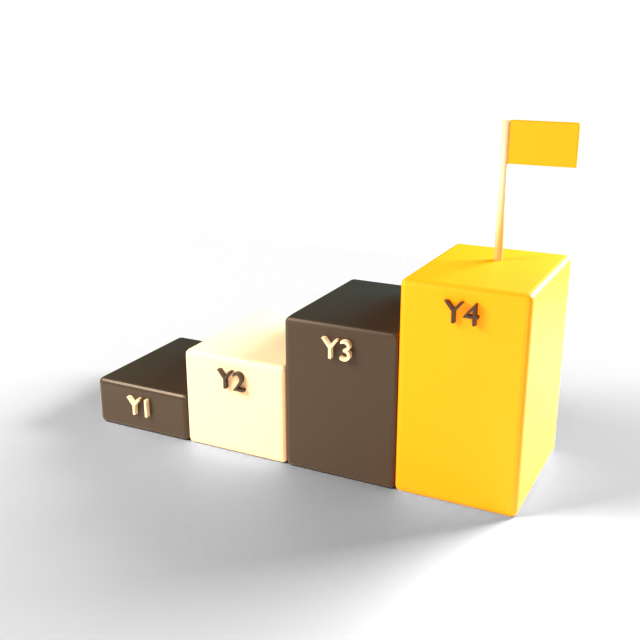
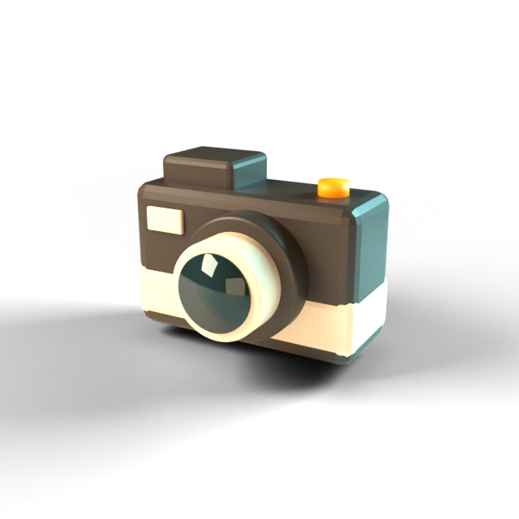
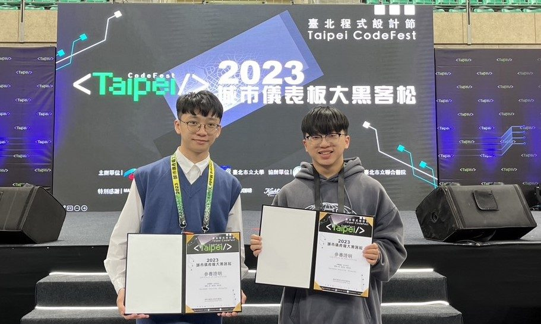

- "name"
- "陳洺安 Ming-An Chen"
- "major"
- "資訊工程學系"
- "double_major"
- "資訊管理學系"
- "birthday"
- "2001-10-30"
- "superpower"
- "被各種程式折磨，然後把它修好"
- "hobbies"
- ["旅遊", "看短影音"]
~$ cat about.md
關於我

- [1]運動精品店員
- [2]經濟學助教／課業守護
- [3]物流場
- [4]葡萄王門市銷售
// 工作不是生活的全部，但它是實現夢想的關鍵一環。
程式語言
- C/C++
- Java
- HTML
- CSS
- Verilog
其他專業
- 商業經濟預測分析
- 證券分析
- 系統分析
~$ git log --reverse --oneline
四年，四個專案

-
大一
PBL 商業分析
經濟學
與工業系跨系合作，我們負責分析，他們負責製造竹槍。
查看獎狀 → -
大二
賣雪Q餅
企業概論
創業實務：實地走訪友商、架設線上網站，學會怎麼把東西賣出去。
Instagram ↗ -
大三
台北大黑客松、大數據競賽
系統分析
台北程式設計節，專案主要製作台北大數據中心套件，並進行系統分析。
查看作品 → -
大四
機器學習
軟體專案管理、專題研究
桌球落點分析、虛擬數字人實現自我對話。
HEAD → 進行中
~$ ls ./awards --sort=time
獎狀與證照
書卷獎
第一次拿到書卷獎，雖然只有 2000 元，但還是很快樂！
企資通
超努力搞懂各種 protocol，現在幾乎有關網路的課都會用到。
資料結構
可以說是演算法最基礎的課程，也讓我在資工可以吃老本。
PBL
與工業系跨系合作，我們負責分析，他們負責製造竹槍。
貿易理論
要背超多東西，但也學到很多貿易、匯率與市場的理論，很有深度。
黑客松競賽
第一次碰到前端語言，向很多優秀的人學習，一起整晚不睡覺打 code。
義工服務
參加青年團、夏令營帶營隊，認識很多比自己年紀大的朋友，漸漸有了學校以外的朋友。
市長獎
高中畢業時獲頒臺南市市長獎（Mayor's Award for Academic Excellence）。
英檢
考過英文畢業門檻實在太快樂了！大一就可以不用一直做模擬測驗。
Java SE 7 Programming
Oracle Workforce Development Program 結業。
Java SE 7 Fundamentals
Oracle Workforce Development Program 結業。
全民中文能力檢定
CWT 中高等合格。
~$ open ./life --warm
螢幕以外的我

~$ vim projects/
程式作品
C++ · 資料結構
2-3 Tree

實作 2-3 tree。比起普通二元樹，樹高減少很多，找資料也更有效率。
一開始沒想到用 vector<nodetype*>，定義了四個 nodetype 指標，插入左中右子節點時狀況各不相同、程式碼冗長。修改後把問題最小化，用遞迴解決了任務一。
> 學到的事：先把問題最小化。
載入程式碼中…C++ · 資料結構
Heap／Priority Queue

用 heap 實作 priority queue。最特別的是不需要用到指標，只要陣列就能完成。
省去很多麻煩，也減少 memory leak 的機會，能很好地維護並找到優先值。
> 學到的事：選對資料結構，程式自然變簡單。
載入程式碼中…Hackathon · 前端 · 數據分析
Taipei CodeFest 2023
台北程式設計節「城市儀表板大黑客松」的成果。主程式不是我們寫的，但過程中學到怎麼開發組件，也在追 code 時感受到前端的有趣與多樣。
結合數據分析與系統分析，是很難得的體驗。
在 YouTube 看成果影片 ↗
商業經濟及預測 · 期末研究報告
Analysis & Predict Economic
以時間序列預測兩組資料：外銷大陸及香港電子產品訂單金額與餐飲業營業額。
之後在系統分析課應用同樣的方法分析 YouBike 使用趨勢，更貼近實務。
- pages
- 14
- date
- 2022-06

~$ ping mingan --say-hi
來聊聊吧
合作、工作機會，或只是想打聲招呼都歡迎，我都會回。
- email asd0389wsx0216@gmail.com
- phone 0978-581-189
- github minggg1030 ↗
- instagram @andy__901030 ↗
- facebook 陳洺安 ↗